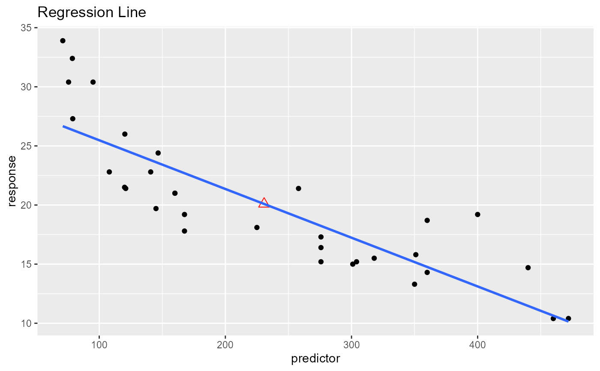

Plot to demonstrate that the regression line always passes through mean of
the response and predictor variables.
Usage
ols_plot_reg_line(response, predictor, print_plot = TRUE)
Arguments
- response
Response variable.
- predictor
Predictor variable.
- print_plot
logical; if TRUE, prints the plot else returns a plot object.
Examples
ols_plot_reg_line(mtcars$mpg, mtcars$disp)
#> `geom_smooth()` using formula = 'y ~ x'
